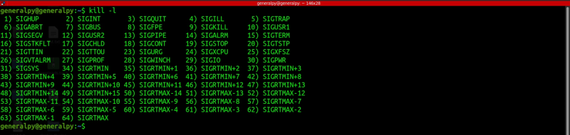
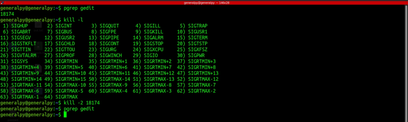
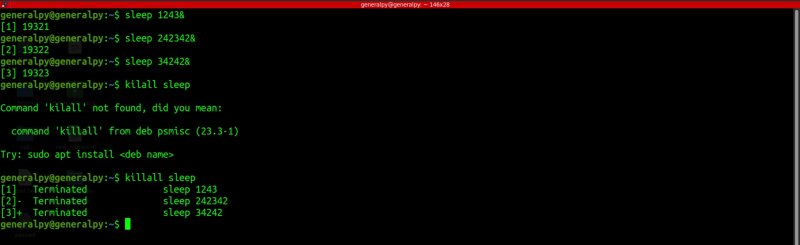

There are a lot of times when a process becomes unnresponsive or takes up too much resources and we want to end it in those situatuions.
These tasks are done in linux by sending signals to a process. Signals are like special notifications to a process which invites it to do something. Invite is used here as process can also reject a signal.
There are multiple signals available in linux. kill command is used to send signals to processes using process id.
To see all available signals use -l flag with kill.

Each signal is assigned a number and signal names prefixed by SIG. Each signal has its own purpose.
There are 3 ways in which we can send signals using kill.
1.
kill -number_of_signal pid(s)

We sent SIGNINT signal which is an interupt signal. When we press ctrl + c in terminal , we send this signal automatically to the process.
We can use pidof command to get id of any running process, provided that name is correct.
2.
kill -signal_name_without_SIG pid(s)
Signal name here must be in all capital letters.
3.
kill -signa_full_name pid(s)
Signal name must be in capital letters.
Another useful signal signal is SIGHUP or number 1 signal. Services like servers only load config when they are started. We can send SIGHUP command to reload the config.
Process id of some processes is stored under /var/run with .pid extension(like for ssh daemon).
Process can catch signal and drop them.
For example when we send TERM signal, process can end immediately or can wait for some time to clean resources. The TERM signal is also known as soft kill.
We can send SIGKILL signal to kill process immediately. It can be used when TERM is dropped.
killall can be used to kill all instances of a process by its name.

The sleep command causes terminal to pause. We added ampersand to make that process a backgroud process.
Note that killall cannot use partial names. Use pkill command if you want to kill with partial names.
Note that user can kill process with same privileges as its privilege levels. Eg simple user cannot kill root processes.